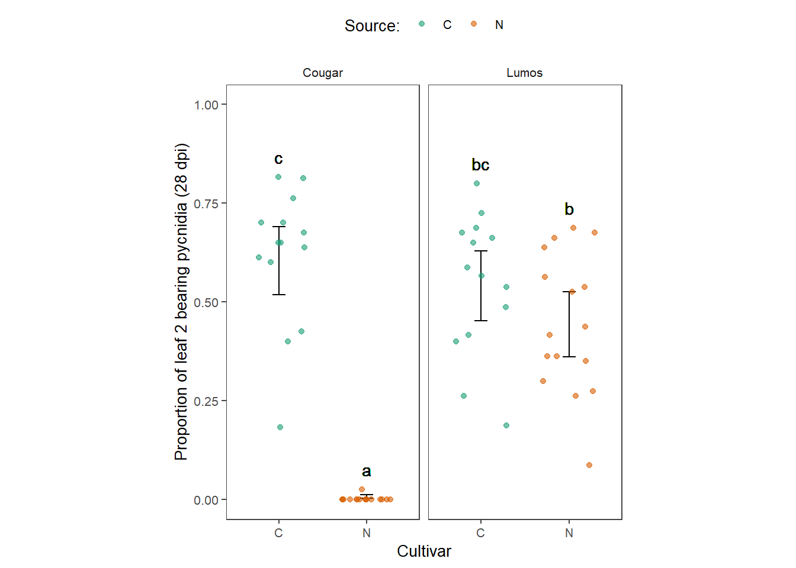

list.of.packages <-
c(
"tidyverse",
"ggplot2",
"knitr",
"padr",
"devtools",
"readxl",
"glmmTMB",
"egg",
"car",
"emmeans",
"effects",
"multcomp",
"broom",
"dotwhisker",
"sjPlot",
"broom.mixed",
"gt"
)
new.packages <-
list.of.packages[!(list.of.packages %in% installed.packages()[, "Package"])]
#Download packages that are not already present in the library
if (length(new.packages))
install.packages(new.packages)
packages_load <-
lapply(list.of.packages, require, character.only = TRUE)
#Print warning if there is a problem with installing/loading some of packages
if (any(as.numeric(packages_load) == 0)) {
warning(paste("Package/s: ", paste(list.of.packages[packages_load != TRUE], sep = ", "), "not loaded!"))
} else {
print("All packages were successfully loaded.")
}## [1] "All packages were successfully loaded."rm(list.of.packages, new.packages, packages_load)
#if instal is not working try
#install.packages("ROCR", repos = c(CRAN="https://cran.r-project.org/"))dta <- read_excel("dta/Cougar Oct 28dpi combined.xlsx",
sheet = "Sheet1",
col_types = c("numeric", "text", "text",
"skip", "skip", "numeric"))
(dta <-
dta %>%
mutate(Pycnidia = Pycnidia/100))gt(dta[1:10,])| Exp | Variety | Source | Pycnidia |
|---|---|---|---|
| 1 | Cougar | N | 0.00000000 |
| 2 | Cougar | N | 0.00000000 |
| 1 | Cougar | C | 0.67500000 |
| 2 | Cougar | C | 0.76250000 |
| 1 | Cougar | C | 0.40000000 |
| 2 | Cougar | C | 0.70000000 |
| 1 | Cougar | N | 0.00000000 |
| 2 | Cougar | N | 0.02666667 |
| 1 | Cougar | C | 0.81666667 |
| 2 | Cougar | C | 0.81250000 |
dta %>%
ggplot()+
geom_boxplot(aes(Source,Pycnidia, colour = Source), width = 0.3)+
geom_point( aes(Source,Pycnidia, colour = Source),width = 0.1, size = 1, position=position_jitter(width=0.2, height=0))+
# annotate("text",x = 1:6, y = 24,
# label=as.character(round(OP_months$temp,2)) )+
ggtitle("")+
ylab("Disease (%)")+
xlab("Cultivar")+
labs(color = "Variety")+
egg::theme_article()+
coord_equal(8/3)+
scale_y_continuous(limits = c(0,1))+
facet_wrap(~Variety)+
ggsave(here::here("res", "Varietytest.png"), width = 5.5, height = 5.5)## Warning: Ignoring unknown parameters: widthhist(dta$Pycnidia, breaks = 20 )The test variable was made by concatenating the test cultivar and the source cultivar names.
dta<- tidyr::unite(dta, "Variety_Source", c("Variety", "Source"), remove = FALSE)
dta$Variety_Source <- factor(dta$Variety_Source)A small numeric constant was added to avoid fitting the zero inflated model.
dta$Pycnidia[dta$Pycnidia == 0] <- 1e-10Accounting for random effects results in appropriate estimates of fixed effects which is why we used generalized linear mixed model (GLMM). Since the values of the response variable, rAUDPC are proportions, beta GLMMs. Stochastic (random-effect) component was the test and the deterministic (fixed-effect) were block and the combined variable (Test_Source).
fit <- glmmTMB(Pycnidia ~ Exp * Variety_Source + (1|Variety),
family = beta_family(),
data = dta)
car::Anova(fit)Block is not significant so we can remove it.
fit <- glmmTMB(Pycnidia ~ Variety_Source + (1|Variety),
family = beta_family(),
data = dta)
summary(fit)## Family: beta ( logit )
## Formula: Pycnidia ~ Variety_Source + (1 | Variety)
## Data: dta
##
## AIC BIC logLik deviance df.resid
## -592.7 -580.1 302.3 -604.7 54
##
## Random effects:
##
## Conditional model:
## Groups Name Variance Std.Dev.
## Variety (Intercept) 4.166e-10 2.041e-05
## Number of obs: 60, groups: Variety, 2
##
## Overdispersion parameter for beta family (): 7.89
##
## Conditional model:
## Estimate Std. Error z value Pr(>|z|)
## (Intercept) 0.4387 0.1820 2.411 0.01591 *
## Variety_SourceCougar_N -5.4585 0.3686 -14.809 < 2e-16 ***
## Variety_SourceLumos_C -0.2724 0.2550 -1.068 0.28542
## Variety_SourceLumos_N -0.6731 0.2479 -2.715 0.00662 **
## ---
## Signif. codes: 0 '***' 0.001 '**' 0.01 '*' 0.05 '.' 0.1 ' ' 1car::Anova(fit)drop1(fit, Variety = "Chisq")Goodness-of-fit of the models was evaluated using the qqplots of residuals.
qqnorm(residuals(fit))plot(jitter(fitted(fit)),residuals(fit),xlab="Fitted",ylab="Residuals")t1 <- broom.mixed::tidy(fit, conf.int = TRUE)
# t1 <-
filter(t1, effect != "ran_pars") %>%
dplyr::select(-c(component, group))d1 <- effect("Variety_Source", fit) # save the estimates for your target effect
d1 <-as.data.frame(d1)posthoc<- lsmeans::lsmeans(fit, pairwise~Variety_Source, adjust="tukey")
posthoclett <-
cld(posthoc[[1]],
level =.05,
alpha = .05,
Letters=letters)left_join(dta, d1, by = "Variety_Source") %>%
left_join(., posthoclett, by = "Variety_Source") %>%
mutate_if(sapply(., is.character), as.factor) %>%
group_by(Source,Variety) %>%
mutate(letter_height = max(Pycnidia),
.group = trimws(.group)) %>%
ungroup() %>%
ggplot() +
geom_text(aes(label = .group, y = letter_height + .05, x = Source)) +
geom_errorbar(
aes(x = Source, ymin = lower, ymax = upper),
position = position_dodge(),
width = 0.15,
size = .5,
alpha = .8
) +
geom_point(
aes(Source, Pycnidia, colour = Source),
width = 0.1,
size = 1.5,
alpha = .6,
position = position_jitter(width = 0.3, height = 0)
) +
ylab("Proportion of leaf 2 bearing pycnidia (28 dpi)") +
xlab("Cultivar") +
labs(color = "Source:") +
egg::theme_article() +
coord_equal(9 / 2) +
scale_y_continuous(limits = c(0, 1)) +
facet_wrap(~ Variety) +
theme(text = element_text(size = 10),
legend.position = "top") +
scale_color_brewer(palette = "Dark2")+
ggsave(
here::here("res", "final_plot_CougarOct2020.png"),
width = 4.5,
height = 5,
dpi =300
) 